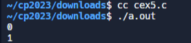

W16 <<
Previous Next >> CEX_T
C_EX
1
#include <stdio.h>
int main()
{
float a = 0.5;
double b = 1.2;
int c = 3;
b = b + a + c;
/* 输出 a, b, c 到屏幕 */
printf("a = %3.1f, b = %3.1f, c = %d\n", a, b, c);
return 0;
}
解釋：
1. `#include <stdio.h>`：這一行包含了標準的輸入/輸出庫，允許你使用 `printf` 等函數。
2. `int main()`：這一行宣告了主函數，它是任何 C 程式的進入點。
3. `{`：開始主函數的主體的大括號。
4. `float a = 0.5;`：宣告一個 `float` 型別的變數 `a`，並初始化為 `0.5`。
5. `double b = 1.2;`：宣告一個 `double` 型別（雙精度浮點數）的變數 `b`，並初始化為 `1.2`。
6. `int c = 3;`：宣告一個 `int` 型別（整數）的變數 `c`，並初始化為 `3`。
7. `b = b + a + c;`：通過將當前的 `b` 值、`a` 和 `c` 相加，更新了 `b` 的值。這相當於 `b = 1.2 + 0.5 + 3`。
8. `printf("a = %3.1f, b = %3.1f, c = %d\n", a, b, c);`：使用 `printf` 函數將 `a`、`b` 和 `c` 的值輸出到螢幕。格式指定符 `%3.1f` 用於以 3 個字符的總寬度打印浮點數（`a` 和 `b`）並在小數點後打印一位。`%d` 用於打印整數值（`c`）。`\n` 代表換行字符，將光標移到下一行。
9. `return 0;`：表示程序已成功執行，並將 0 返回給操作系統。
10. `}`：結束主函數主體的大括號。
總之，這個程式宣告和初始化了三個變數（`a`、`b` 和 `c`），執行了一個計算以更新 `b` 的值，然後將 `a`、`b` 和 `c` 的值打印到螢幕上，最後返回 0 給操作系統。
2
/* ====================
字元範例 1
==================== */
#include <stdio.h>
int main()
{
char x, y;
x = 'a';
y = (char)97;
/* 輸出 x, y, x, 最後一個是以 ASCII 值顯示 y */
printf("x = %c, y = %c, ASCII of y = %d", x, y, y);
return 0;
}
解釋：
1. `/* ====================`：這是多行註釋的開始，標明了註釋區塊的起始。
2. `字元範例 1`：這是註釋，提供了與程式碼相關的說明或標題。
3. `==================== */`：多行註釋的結束。
4. `#include <stdio.h>`：這是包含標準輸入/輸出庫的指令，它允許使用 `printf` 和其他輸出功能。
5. `int main()`：主函式的開始，它是每個 C 程式的進入點。
6. `{`：主函式的主體開始。
7. `char x, y;`：宣告兩個 `char` 型別的變數 `x` 和 `y`，這些變數將用於存儲字元。
8. `x = 'a';`：將字元 `'a'` 賦值給變數 `x`。
9. `y = (char)97;`：將 ASCII 值 `97` 轉換為 `char` 型別，然後將其賦值給變數 `y`。
10. `/* 輸出 x, y, x, 最後一個是以 ASCII 值顯示 y */`：這是一條註釋，描述了接下來的 `printf` 語句的目的。
11. `printf("x = %c, y = %c, ASCII of y = %d", x, y, y);`：使用 `printf` 函式將 `x`、`y` 和 `y` 的 ASCII 值輸出到螢幕上。`%c` 用於打印字符，`%d` 用於打印整數。
12. `return 0;`：表示程序已成功執行，返回 0 給操作系統。
13. `}`：主函式的主體結束。
總的來說，這個程式碼演示了如何宣告、賦值和輸出字符型變數 `x` 和 `y`，以及如何使用 ASCII 值。
3
#include <stdio.h>
int main()
{
int a = 64;
int b = 0x40; // 以十六进制表示
long c = 64L;
// 打印变量的值
printf("%d, %d, %ld", a, b, c);
return 0;
}
解釋：
1. `#include <stdio.h>`：這是包含標準輸入/輸出庫的指令，它允許使用 `printf` 和其他輸出功能。
2. `int main()`：主函式的開始，它是每個 C 程式的進入點。
3. `{`：主函式的主體開始。
4. `int a = 64;`：宣告一個整數變數 `a` 並初始化為 64。
5. `int b = 0x40;`：宣告一個整數變數 `b` 並初始化為 0x40，這表示以十六進制表示法給變數 `b` 賦值。在這種情況下，`0x40` 的十進制等於 64。
6. `long c = 64L;`：宣告一個長整數變數 `c` 並初始化為 64L。這裡使用 `L` 後綴表示這是一個長整數。
7. `// 打印变量的值`：這是一條單行註釋，描述了接下來 `printf` 語句的目的。
8. `printf("%d, %d, %ld", a, b, c);`：使用 `printf` 函式將變數 `a`（按十進制顯示）、`b`（按十進制顯示）、`c`（按長整數顯示）的值輸出到螢幕上。格式字符串 `%d` 表示將整數以十進制形式輸出，`%ld` 表示將長整數以十進制形式輸出。
9. `return 0;`：表示程序已成功執行，返回 0 給操作系統。
10. `}`：主函式的主體結束。
總的來說，這個程式碼演示了如何宣告、初始化和輸出整數變數，同時展示了不同進制表示法（十進制和十六進制）。
4
#include <stdio.h>
int main()
{
int a = 10, b = 5;
// 第一组比较
printf("a == b is %d\n", a == b);
printf("a > b is %d\n", a > b);
printf("a < b is %d\n", a < b);
printf("a >= b is %d\n", a >= b);
printf("a <= b is %d\n", a <= b);
printf("a != b is %d\n", a != b);
printf("\n");
// 修改 b 的值
b = 10;
// 第二组比较
printf("a == b is %d\n", a == b);
printf("a > b is %d\n", a > b);
printf("a < b is %d\n", a < b);
printf("a >= b is %d\n", a >= b);
printf("a <= b is %d\n", a <= b);
printf("a != b is %d\n", a != b);
return 0;
}
解釋：
1. `#include <stdio.h>`：這是包含標準輸入/輸出庫的指令，允許使用 `printf` 函式。
2. `int main()`：主函式的開始，它是每個 C 程式的進入點。
3. `{`：主函式的主體開始。
4. `int a = 10, b = 5;`：宣告並初始化兩個整數變數 `a` 和 `b` 分別為 10 和 5。
5. `// 第一组比较`：這是一條單行註釋，說明接下來的程式碼將執行第一組比較。
6. `printf("a == b is %d\n", a == b);`：使用 `printf` 函式輸出 `a == b` 的結果。 `%d` 是一個格式化占位符，用來輸出整數。在這裡，它將被 `a == b` 的值取代。
7. 類似地，後續的 `printf` 語句用於輸出其他比較運算的結果，包括 `a > b`、`a < b`、`a >= b`、`a <= b`、`a != b`。
8. `printf("\n");`：輸出一個換行符號，使輸出更易讀。
9. `b = 10;`：修改變數 `b` 的值為 10。
10. `// 第二组比较`：這是一條單行註釋，說明接下來的程式碼將執行第二組比較。
11. 後續的 `printf` 語句再次執行第二組比較，這次使用修改後的 `b` 值。
12. `return 0;`：表示程序已成功執行，返回 0 給操作系統。
13. `}`：主函式的主體結束。
總的來說，這個程式碼演示了使用比較運算符（==、>、<、>=、<=、!=）進行變數之間的比較，並輸出結果。
5
#include <stdio.h>
void main()
{
int a;
// 第一次输出
a = 3;
printf("%d\n", !a); // 逻辑非运算，a为真，所以输出0
// 第二次输出
a = 0;
printf("%d\n", !a); // 逻辑非运算，a为假，所以输出1
}
解釋：
1. `#include <stdio.h>`：這是包含標準輸入/輸出庫的指令，使你能夠使用 `printf` 函式。
2. `void main()`：主函式的開始。應注意，標準中 `main` 函式的返回類型應該是 `int`，而不是 `void`。正確的主函式應該是 `int main()`，而不是 `void main()`。
3. `{`：主函式的主體開始。
4. `int a;`：宣告一個整數變數 `a`。
5. `// 第一次输出`：這是一條單行註釋，用於標識接下來的程式碼將執行第一次輸出。
6. `a = 3;`：將變數 `a` 的值設置為 3。
7. `printf("%d\n", !a);`：使用 `printf` 函式，輸出 `!a` 的結果。`!` 是逻辑非運算符，將 `a` 的值取反。由於 `a` 是非零值（真），`!a` 為假（0）。因此，這裡輸出 `0`，接著換行。
8. `// 第二次输出`：這是一條單行註釋，用於標識接下來的程式碼將執行第二次輸出。
9. `a = 0;`：將變數 `a` 的值設置為 0。
10. `printf("%d\n", !a);`：再次使用 `printf` 函式，輸出 `!a` 的結果。由於 `a` 是零值（假），`!a` 為真（1）。因此，這裡輸出 `1`，接著換行。
11. `}`：主函式的主體結束。
總的來說，這個程式碼演示了逻辑非運算符（`!`）的使用，它將非零值取反為零，並將零值取反為非零。

6
#include <stdio.h>
void main()
{
char a;
// 使用 %zu 格式说明符输出 size_t 类型
printf("The size of int is %zu\n", sizeof(int));
// 使用 %zu 格式说明符输出 size_t 类型
printf("The size of char a is %zu\n", sizeof(a));
}
解釋：
#include <stdio.h>
void main()
{
char a;
// 使用 %zu 格式说明符输出 size_t 类型
printf("The size of int is %zu\n", sizeof(int));
// 使用 %zu 格式说明符输出 size_t 类型
printf("The size of char a is %zu\n", sizeof(a));
}
7
#include <stdio.h>
/* ====================
计算长方形面积, 需传入长与宽.
==================== */
int rect(int x, int y)
{
int result;
result = x * y;
return result; /* 返回 result */
}
/* ====================
主函数
==================== */
int main()
{
int x = 8, y = 4;
int a;
a = rect(x, y);
printf("8*4 的面积是 %d", a);
return 0;
}
解釋：
1. `#include <stdio.h>`：這是包含標準輸入/輸出庫的指令，使你能夠使用 `printf` 函式。
2. `int rect(int x, int y)`：這是一個函式的宣告，該函式名稱為 `rect`，接受兩個整數參數 `x` 和 `y`。函式的目的是計算長方形的面積。
3. `{`：函式 `rect` 的主體開始。
4. `int result;`：宣告一個整數變數 `result`，用於存儲計算的結果。
5. `result = x * y;`：將 `result` 的值設置為 `x` 與 `y` 的乘積，即計算長方形的面積。
6. `return result;`：返回計算的結果。
7. `}`：函式 `rect` 的主體結束。
8. `int main()`：主函式的宣告。這是程式的起點。
9. `{`：主函式的主體開始。
10. `int x = 8, y = 4;`：宣告兩個整數變數 `x` 和 `y`，並將它們的值分別初始化為 8 和 4。
11. `int a;`：宣告一個整數變數 `a`，用於存儲呼叫 `rect` 函式後的結果。
12. `a = rect(x, y);`：呼叫 `rect` 函式，將 `x` 和 `y` 的值作為參數傳遞給它，然後將計算結果存儲在變數 `a` 中。
13. `printf("8*4 的面积是 %d", a);`：使用 `printf` 函式將計算結果輸出到控制台，顯示 `8*4 的面积是` 並輸出變數 `a` 的值。
14. `return 0;`：主函式返回 0，這表示程序成功結束。
15. `}`：主函式的主體結束。
總的來說，這個程式碼計算並輸出一個長方形的面積，長和寬分別為 8 和 4。
8
#include <stdio.h>
float circle( int r ); /* 宣告 circle 的 prototype */
void main()
{
float answer;
answer = circle(8);
printf( " 圓周長度是 %f", answer );
}
/* ====================
circle 函數, 計算 circle 的圓周長
==================== */
float circle( int r )
{
float result;
result = 3.14159 * (double)1001 * r;
return ( result );
}
解釋：
1. `#include <stdio.h>`：這是包含標準輸入/輸出庫的指令，使你能夠使用 `printf` 函式。
2. `float circle(int r);`：這是 `circle` 函式的原型宣告。它告訴編譯器有一個名為 `circle` 的函式，接受一個整數參數 `r`，並返回一個浮點數。
3. `void main()`：主函式的宣告。注意，正確的返回型別應該是 `int`，而不是 `void`，因為 `main` 函式應該返回一個整數值。
4. `{`：主函式的主體開始。
5. `float answer;`：宣告一個浮點數變數 `answer`，用於存儲 `circle` 函式的計算結果。
6. `answer = circle(8);`：呼叫 `circle` 函式，將整數值 8 作為參數傳遞給它，然後將計算結果存儲在 `answer` 中。
7. `printf(" 圓周長度是 %f", answer);`：使用 `printf` 函式將計算結果輸出到控制台，顯示 " 圓周長度是 " 並輸出 `answer` 的值。
8. `}`：主函式的主體結束。
9. `float circle(int r)`：`circle` 函式的定義開始。這個函式接受一個整數參數 `r`，返回一個浮點數。
10. `{`：`circle` 函式的主體開始。
11. `float result;`：宣告一個浮點數變數 `result`，用於存儲計算的結果。
12. `result = 3.14159 * (double)1001 * r;`：計算圓的周長。這裡有一個奇怪的地方，似乎將 `(double)1001` 乘以 `r`。這可能是一個錯誤，因為它看起來並不符合計算圓周長的公式。
13. `return result;`：返回計算的結果。
14. `}`：`circle` 函式的主體結束。
總的來說，這個程式碼存在一些問題。特別是在計算圓周長的部分，乘以 `(double)1001` 的目的似乎並不明確，可能是一個錯誤。
9
#include <stdio.h>
int main()
{
char ch;
printf("输入一个字符：");
// 检查 scanf 的返回值，确保成功读取一个字符
if (scanf(" %c", &ch) != 1) {
printf("读取字符失败\n");
return 1; // 或者采取其他错误处理措施
}
if (ch == 'a') {
printf("您按下了 'a'\n");
}
return 0;
}
解釋：
1. `#include <stdio.h>`：這是包含標準輸入/輸出庫的指令，使你能夠使用 `printf` 和 `scanf` 函式。
2. `int main()`：主函式的宣告，程式的執行從這裡開始。
3. `{`：主函式的主體開始。
4. `char ch;`：宣告一個 `char` 類型的變數 `ch`，用於存儲從用戶輸入讀取的字符。
5. `printf("输入一个字符：");`：使用 `printf` 函式輸出提示信息，要求用戶輸入一個字符。
6. `if (scanf(" %c", &ch) != 1)`：使用 `scanf` 函式讀取用戶輸入的字符。`%c` 是格式化輸入指示符，用於讀取字符。注意 `%c` 前的空格，它的作用是吸收任何前面的空白字符（包括換行符、空格等），以防止之前的輸入影響。`!= 1` 用於檢查 `scanf` 的返回值，確保成功讀取了一個字符。
7. `{`：如果 `if` 條件成立，進入這個區塊。
8. `printf("读取字符失败\n");`：在控制台上輸出一條錯誤信息，表示讀取字符失敗。
9. `return 1;`：返回一個非零值，表示程序異常結束。這是一種處理錯誤的方式，通常在發現錯誤時提前終止程序。
10. `}`：結束 `if` 區塊。
11. `if (ch == 'a')`：檢查讀取的字符是否等於小寫字母 'a'。
12. `{`：如果 `if` 條件成立，進入這個區塊。
13. `printf("您按下了 'a'\n");`：在控制台上輸出一條消息，表示用戶按下了 'a'。
14. `}`：結束 `if` 區塊。
15. `return 0;`：返回零，表示程序正常結束。
16. `}`：主函式的主體結束。
總的來說，這個程式提示用戶輸入一個字符，然後檢查是否為小寫字母 'a'，如果是，則輸出相應的消息。程式碼中有錯誤處理機制，當讀取字符失敗時，會輸出錯誤消息並提前終止程序。
10
#include <stdio.h>
void main()
{
int i;
// 提示用户输入一个整数
printf("100：");
// 读取用户输入的整数
scanf("%d", &i);
// 判断输入的整数，并输出相应的消息
if (i < 100)
{
printf("i < 100\n");
}
else
{
if ((i >= 100) && (i < 200))
{
printf("i >= 100 且 i < 200\n");
}
else
{
printf("i >= 200\n");
}
}
}
解釋：
1. `#include <stdio.h>`：這是包含標準輸入/輸出庫的指令，使你能夠使用 `printf` 和 `scanf` 函式。
2. `void main()`：主函式的宣告，注意應使用 `int main()` 而不是 `void main()`。修正方式將 `void` 改為 `int`。
3. `{`：主函式的主體開始。
4. `int i;`：宣告一個整數變數 `i`，用於存儲用戶輸入的數字。
5. `printf("100：");`：使用 `printf` 函式輸出提示信息，提示用戶輸入一個整數。
6. `scanf("%d", &i);`：使用 `scanf` 函式讀取用戶輸入的整數。`%d` 是格式化輸入指示符，用於讀取整數。
7. `if (i < 100)`：判斷 `i` 是否小於 100。
8. `{`：如果 `if` 條件成立，進入這個區塊。
9. `printf("i < 100\n");`：在控制台上輸出一條消息，表示 `i` 小於 100。
10. `}`：結束 `if` 區塊。
11. `else`：如果 `if` 條件不成立，進入 `else` 區塊。
12. `{`：`else` 區塊的開始。
13. `if ((i >= 100) && (i < 200))`：這是一個嵌套的 `if`，檢查 `i` 是否大於等於 100 且小於 200。
14. `{`：如果嵌套 `if` 條件成立，進入這個區塊。
15. `printf("i >= 100 且 i < 200\n");`：在控制台上輸出一條消息，表示 `i` 大於等於 100 且小於 200。
16. `}`：結束嵌套 `if` 區塊。
17. `else`：如果嵌套 `if` 條件不成立，進入 `else` 區塊。
18. `{`：`else` 區塊的開始。
19. `printf("i >= 200\n");`：在控制台上輸出一條消息，表示 `i` 大於等於 200。
20. `}`：結束 `else` 區塊。
21. `}`：結束主函式的主體。
請注意，我們建議修正 `void main()` 為 `int main()`，這是標準的主函式形式。
看似有問題
11
/* =========================
function pointer 2
========================= */
#include <stdio.h>
/* ====================
say “Hello”.
==================== */
void Hello(void)
{
printf(“ Hello\n”);
}
/* ====================
say “World”.
==================== */
void World(void)
{
printf(“ World\n”);
}
/* ====================
main function.
==================== */
int main()
{
void (*func[3])(void); /* 宣告一個 function pointer array */
int i = 0 ;
func[0] = Hello; /* 建立 Jumping table */
func[1] = World;
while(1)
{
printf(“Input a number between 0 and 1 : ”);
scanf( “%d”,&i );
/* 若 I 大於等於 2 或是小於 0 則離開 loop */
if( (i >= 2)||(i < 0) )
break;
else
func[ i ]( ); /* 執行! */
}
return 0;
}
解釋：
1. `#include <stdio.h>`：這是包含標準輸入/輸出庫的指令，使你能夠使用 `printf` 和 `scanf` 函式。
2. `void Hello(void)`：定義一個名為 `Hello` 的函式，該函式不接受任何參數，並在控制台上輸出 " Hello"。
3. `void World(void)`：定義一個名為 `World` 的函式，該函式不接受任何參數，並在控制台上輸出 " World"。
4. `int main()`：主函式的宣告。
5. `void (*func[3])(void);`：宣告一個包含三個元素的函式指針陣列 `func`。這個陣列中的每個元素都是一個指向不接受參數且返回 `void` 的函式的指針。
6. `int i = 0;`：宣告一個整數變數 `i`，並初始化為 0。
7. `func[0] = Hello;`：將陣列中的第一個元素設定為指向 `Hello` 函式的指針。
8. `func[1] = World;`：將陣列中的第二個元素設定為指向 `World` 函式的指針。
9. `while(1)`：進入一個無窮迴圈。
10. `printf("Input a number between 0 and 1 : ");`：在控制台上輸出提示消息，要求用戶輸入介於 0 和 1 之間的數字。
11. `scanf("%d", &i);`：使用 `scanf` 函式讀取用戶輸入的整數並將其存儲在變數 `i` 中。
12. `if ((i >= 2) || (i < 0))`：檢查 `i` 是否大於等於 2 或小於 0。
13. `break;`：如果條件成立，退出無窮迴圈。
14. `else`：如果條件不成立，執行以下區塊。
15. `func[i]();`：根據用戶輸入的數字選擇要執行的函式，由於函式指針陣列的設定，它將呼叫 `Hello` 或 `World` 函式。
16. `return 0;`：主函式的返回值，表示程式執行成功結束。
12
#include <stdio.h>
/* ====================
say “Hello”.
==================== */
void Hello(void)
{
printf("Hello\n");
}
/* ====================
say “World”.
==================== */
void World(void)
{
printf("World\n");
}
/* ====================
main function.
==================== */
int main()
{
void (*func[3])(void); /* 声明一个函数指针数组 */
int i = 0;
func[0] = Hello; /* 建立 Jumping table */
func[1] = World;
while (1)
{
printf("Input a number between 0 and 1: ");
scanf("%d", &i);
/* 如果 i 大于等于 2 或小于 0 则退出循环 */
if (i >= 2 || i < 0)
break;
else
func[i](); /* 执行函数 */
}
return 0;
}
解釋：
1. `#include <stdio.h>`：這是包含標準輸入/輸出庫的指令，使你能夠使用 `printf` 和 `scanf` 函式。
2. `void Hello(void)`：定義一個名為 `Hello` 的函式，該函式不接受任何參數，並在控制台上輸出 "Hello"。
3. `void World(void)`：定義一個名為 `World` 的函式，該函式不接受任何參數，並在控制台上輸出 "World"。
4. `int main()`：主函式的宣告。
5. `void (*func[3])(void);`：宣告一個包含三個元素的函式指針陣列 `func`。這個陣列中的每個元素都是一個指向不接受參數且返回 `void` 的函式的指針。
6. `int i = 0;`：宣告一個整數變數 `i`，並初始化為 0。
7. `func[0] = Hello;`：將陣列中的第一個元素設定為指向 `Hello` 函式的指針。
8. `func[1] = World;`：將陣列中的第二個元素設定為指向 `World` 函式的指針。
9. `while (1)`：進入一個無窮迴圈。
10. `printf("Input a number between 0 and 1: ");`：在控制台上輸出提示消息，要求用戶輸入介於 0 和 1 之間的數字。
11. `scanf("%d", &i);`：使用 `scanf` 函式讀取用戶輸入的整數並將其存儲在變數 `i` 中。
12. `if (i >= 2 || i < 0)`：檢查 `i` 是否大於等於 2 或小於 0。
13. `break;`：如果條件成立，退出無窮迴圈。
14. `else`：如果條件不成立，執行以下區塊。
15. `func[i]();`：根據用戶輸入的數字選擇要執行的函式，由於函式指針陣列的設定，它將呼叫 `Hello` 或 `World` 函式。
16. `return 0;`：主函式的返回值，表示程式執行成功結束。
13
#include <stdio.h>
/* ====================
say “Hello”.
==================== */
void Hello(void)
{
printf("Hello\n");
}
/* ====================
say “World”.
==================== */
void World(void)
{
printf("World\n");
}
/* ====================
main function.
==================== */
int main()
{
void (*func[3])(void); /* 声明一个函数指针数组 */
int i = 0;
func[0] = Hello; /* 建立 Jumping table */
func[1] = World;
while (1)
{
printf("Input a number between 0 and 1: ");
// 检查 scanf 的返回值，确保成功读取一个整数
if (scanf("%d", &i) != 1)
{
printf("无效输入，请输入一个整数。\n");
break;
}
/* 如果 i 大于等于 2 或小于 0 则退出循环 */
if (i >= 2 || i < 0)
break;
else
func[i](); /* 执行函数 */
}
return 0;
}
解釋：
1. `#include <stdio.h>`：這是包含標準輸入/輸出庫的指令，使你能夠使用 `printf` 和 `scanf` 函式。
2. `void Hello(void)`：定義一個名為 `Hello` 的函式，該函式不接受任何參數，並在控制台上輸出 "Hello"。
3. `void World(void)`：定義一個名為 `World` 的函式，該函式不接受任何參數，並在控制台上輸出 "World"。
4. `int main()`：主函式的宣告。
5. `void (*func[3])(void);`：宣告一個包含三個元素的函式指針陣列 `func`。這個陣列中的每個元素都是一個指向不接受參數且返回 `void` 的函式的指針。
6. `int i = 0;`：宣告一個整數變數 `i`，並初始化為 0。
7. `func[0] = Hello;`：將陣列中的第一個元素設定為指向 `Hello` 函式的指針。
8. `func[1] = World;`：將陣列中的第二個元素設定為指向 `World` 函式的指針。
9. `while (1)`：進入一個無窮迴圈。
10. `printf("Input a number between 0 and 1: ");`：在控制台上輸出提示消息，要求用戶輸入介於 0 和 1 之間的數字。
11. `if (scanf("%d", &i) != 1)`：檢查 `scanf` 函式的返回值，確保成功讀取一個整數。如果輸入不是有效整數，輸出錯誤消息，並結束迴圈。
12. `break;`：如果輸入不是有效整數，退出無窮迴圈。
13. `if (i >= 2 || i < 0)`：檢查 `i` 是否大於等於 2 或小於 0。
14. `break;`：如果條件成立，退出無窮迴圈。
15. `else`：如果條件不成立，執行以下區塊。
16. `func[i]();`：根據用戶輸入的數字選擇要執行的函式，由於函式指針陣列的設定，它將呼叫 `Hello` 或 `World` 函式。
17. `return 0;`：主函式的返回值，表示程式執行成功結束。
22
/* ====================
pointer to pointer – 1.
==================== */
#include <stdio.h>
int main() {
char *Hello = "Hello";
char *World = "World";
char *GoodBye = "Good Bye";
char *StrArray[3];
char **Str;
int i;
Str = StrArray;
StrArray[0] = Hello;
StrArray[1] = World;
StrArray[2] = GoodBye;
// Print strings using array indexing
for (i = 0; i < 3; i++) {
printf("%s ", StrArray[i]);
}
// Print strings using pointer arithmetic
Str = StrArray; // Reset the pointer to the beginning
for (i = 0; i < 3; i++) {
printf("%s ", *Str);
Str++;
}
return 0;
}
解釋：
1. `#include <stdio.h>`：這是包含標準輸入/輸出庫的指令，使你能夠使用 `printf` 函式。
2. `char *Hello = "Hello";`：宣告一個指向字元的指標 `Hello`，指向包含字串 "Hello" 的常數字串。
3. `char *World = "World";`：宣告一個指向字元的指標 `World`，指向包含字串 "World" 的常數字串。
4. `char *GoodBye = "Good Bye";`：宣告一個指向字元的指標 `GoodBye`，指向包含字串 "Good Bye" 的常數字串。
5. `char *StrArray[3];`：宣告一個包含三個元素的字元指標陣列 `StrArray`。
6. `char **Str;`：宣告一個指向指標的指標 `Str`。
7. `int i;`：宣告一個整數變數 `i`。
8. `Str = StrArray;`：將指標 `Str` 設定為指向陣列 `StrArray` 的第一個元素。
9. `StrArray[0] = Hello;`：將陣列 `StrArray` 的第一個元素設定為指向 "Hello" 字串的指標。
10. `StrArray[1] = World;`：將陣列 `StrArray` 的第二個元素設定為指向 "World" 字串的指標。
11. `StrArray[2] = GoodBye;`：將陣列 `StrArray` 的第三個元素設定為指向 "Good Bye" 字串的指標。
12. `for (i = 0; i < 3; i++) { printf("%s ", StrArray[i]); }`：使用陣列索引逐一輸出字串 "Hello", "World", "Good Bye"。
13. `Str = StrArray;`：將指標 `Str` 重新設定為指向陣列 `StrArray` 的第一個元素。
14. `for (i = 0; i < 3; i++) { printf("%s ", *Str); Str++; }`：使用指標算術逐一輸出字串 "Hello", "World", "Good Bye"，這次使用指標 `Str` 和後置遞增運算子。
23
#include <stdio.h>
int main() {
float this_is_a_number1, this_is_a_number2;
int scanf_result; // Dummy variable to capture scanf's return value
/* 读取输入的浮点数 */
scanf_result = scanf("%f", &this_is_a_number1);
/* 读取输入的浮点数 */
scanf_result = scanf("%f", &this_is_a_number2);
/* Your code here */
return 0;
}
解釋：
1. `#include <stdio.h>`：這是包含標準輸入/輸出庫的指令，允許你使用 `scanf` 和其他相關的輸入/輸出函式。
2. `int main()`：這是主函式的宣告，程式的執行從這裡開始。
3. `float this_is_a_number1, this_is_a_number2;`：宣告兩個浮點數變數 `this_is_a_number1` 和 `this_is_a_number2`，這裡用來存放從用戶輸入中讀取的數字。
4. `int scanf_result;`：宣告一個整數變數 `scanf_result`，這是一個虛擬變數，用來捕獲 `scanf` 函數的返回值，確保成功讀取輸入。
5. `scanf_result = scanf("%f", &this_is_a_number1);`：使用 `scanf` 函數從標準輸入讀取浮點數，格式化字符串 `%f` 表示輸入的是浮點數，`&this_is_a_number1` 將輸入的值存儲到變數 `this_is_a_number1` 中。`scanf_result` 用於檢查是否成功讀取輸入。
6. `scanf_result = scanf("%f", &this_is_a_number2);`：同上，讀取第二個浮點數。
7. `/* Your code here */`：這是一個占位註解，表示這裡是你自己的程式碼區塊。你可以在這裡進行任何你需要對這兩個浮點數進行的操作。
8. `return 0;`：這表示主函式正常結束，並將返回值設為0。
W16 <<
Previous Next >> CEX_T